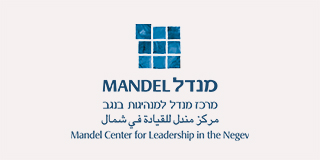

Warning: Undefined variable $html_content in /Users/meirsadan/Sites/mandel-ir/templates/item.php on line 30

התוכניות הישוביות באופקים ובבאר שבע נמשכות בדגש יישומי מבוסס חזון וערכים
2011-09-30
Warning: Undefined variable $html_content in /Users/meirsadan/Sites/mandel-ir/templates/item.php on line 30